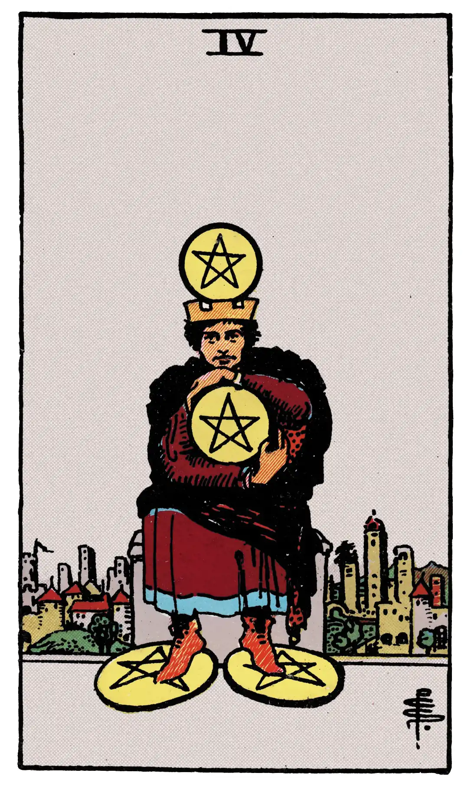

Four of Pentacles

A.E.W.
Upright
The surety of possessions, cleaving to that which one has, gift, legacy, inheritance.
Additionally
For a bachelor, pleasant news from a lady.
Recurrence
2 - Insomnia.
3 - A subject of reflection.
4 - Journey near at hand.
Reversed
Suspense, delay, opposition.
Additionally
Observation, hindrances.
Recurrence
2 - Dispute.
3 - Disquiet.
4 - Walks abroad.
S.L.M.M.
Upright
Pleasure, Gaiety, Enjoyment, Satisfaction
Reversed
Obstacles, Hindrances.
Description
A crowned figure, having a pentacle over his crown, clasps another with hands and arms; two pentacles are under his feet. He holds to that which he has.